首页 / 关于我们
从1978年的街边小摊，到现代化食品企业——杨和平元宵的品牌运营主体。
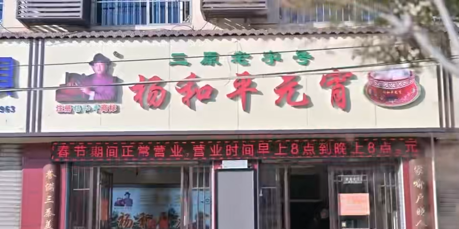
公司2019年4月成立于陕西省咸阳市泾阳县，集元宵等速冻米面制品研发、生产、销售于一体。
在规模化生产的同时，公司始终坚持"关键工序手工化、原料品质标准化"：糯米浸泡十五天、石磨碾粉、手工滚制"三次水六层粉"的传统工序一脉相承；2017年迁厂升级后，引入自动包装与制馅设备，以现代工艺守护传统风味。
公司已取得食品生产许可（SC11161042303441），产品执行GB/T23500国家标准，涵盖经典口味与木糖醇健康系列十余种，销售网络覆盖西安、咸阳、高陵、铜川、汉中、宝鸡、蓝田及山西运城等地，并支持电商直播与全国快递配送。
一根扁担挑出的生意，四代人接续的传承。
创始人杨成以手工元宵闻名乡里，从艺三十载，为杨和平元宵奠定技艺根基。
杨成之女杨淑雯继承手艺，将手工元宵带入集市销售，让更多人尝到这份味道。
杨淑雯之子杨毅军在三原创业，从街头小摊起步，"杨和平元宵"由此诞生。
品牌正式注册商标，走向规范化经营。
引入自动包装与制馅设备，保留手摇滚制核心工序，产能与品质双提升。
品牌公司化运营，正式开启规模化发展之路。
经咸阳市商务局认定为"咸阳老字号"，并获"陕西名小吃""三秦名吃"等荣誉。
主持人姚雪松对话传承人杨毅军，讲述四代传承的元宵故事。
"三原杨和平元宵制作技艺"列入三原县第九批非物质文化遗产代表性项目名录，杨毅军获非遗代表性传承人称号。
《大国品牌故事》专题片播出；随三原高新区赴北京新春市集，非遗味道香飘首都。
一碗元宵，四代接力，近百年的家族记忆。
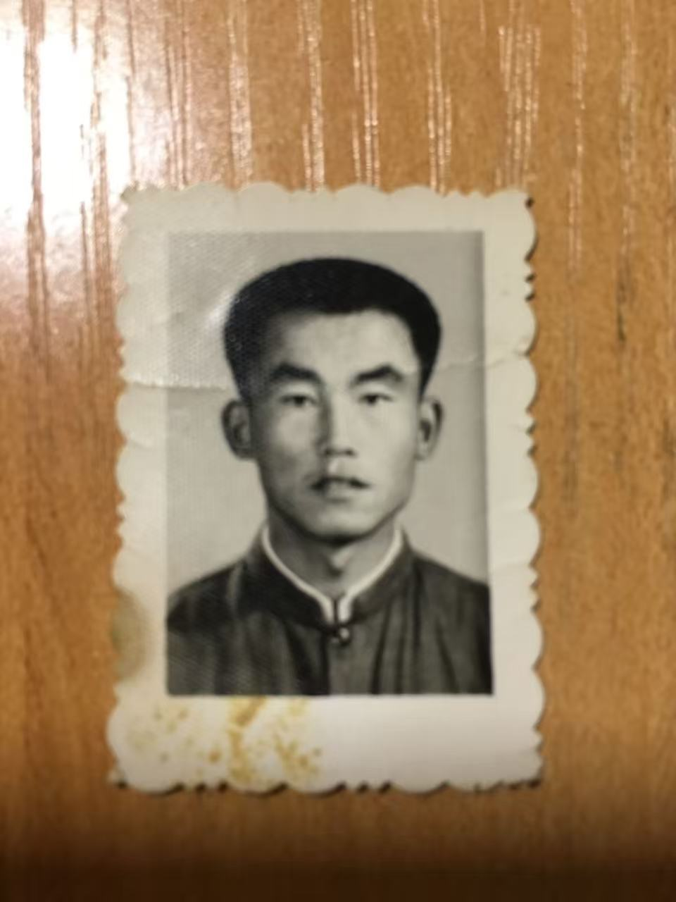
1896年生，从艺30年。以手工元宵传艺乡里，奠定家族技艺根基。
1926年生，杨成之女，从艺32年。将手工元宵带入集市，扩大影响。
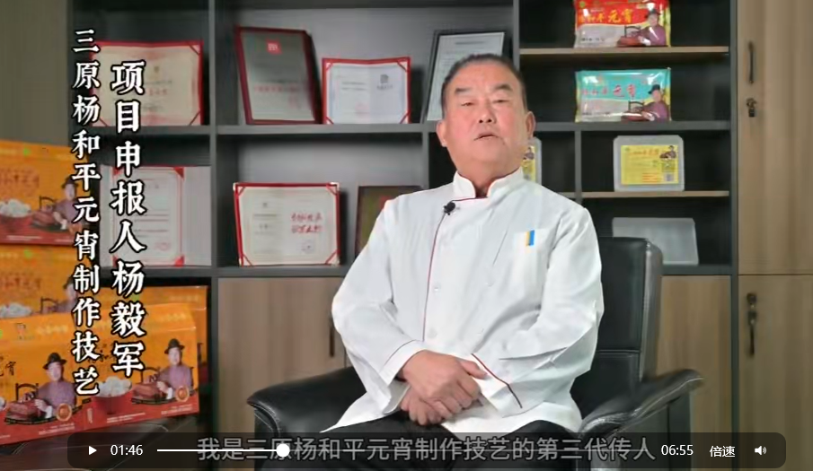
1956年生，杨淑雯之子，从艺40年。1978年创业开店，品牌奠基人，三原县非遗代表性传承人。
1981年生，杨毅军之女，从艺6年。推动品牌公司化运营与全国化发展。
官方认证与行业认可，见证品牌的每一步成长。
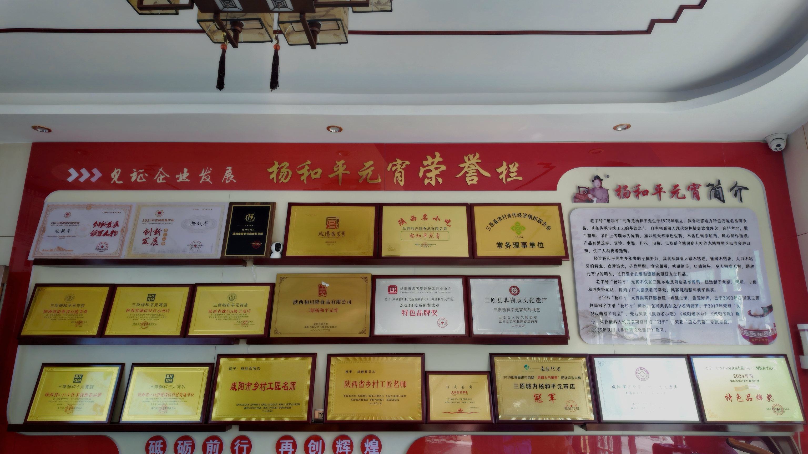
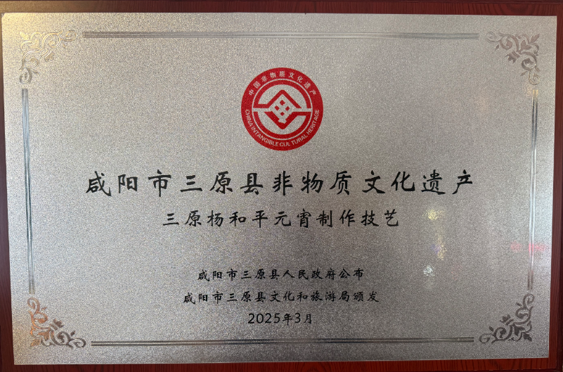
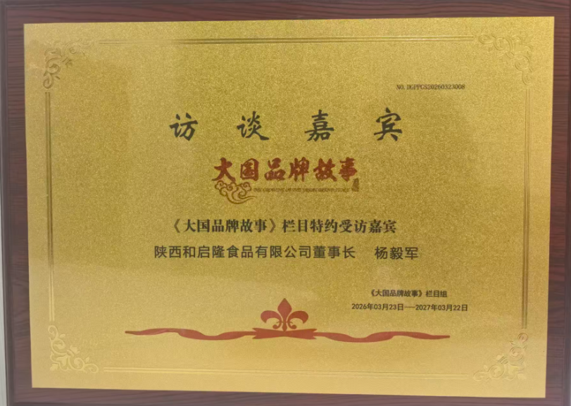
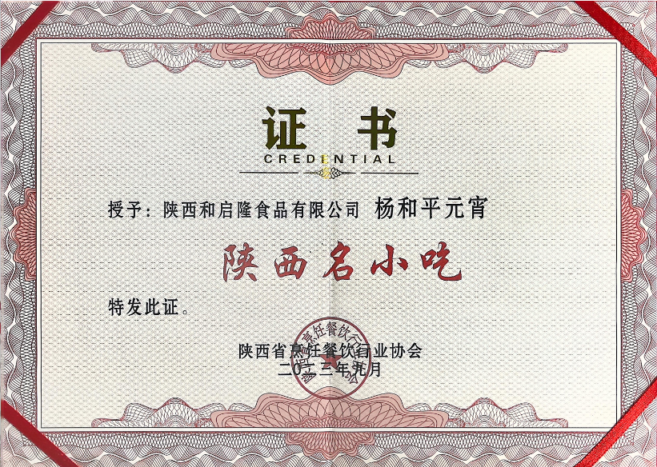
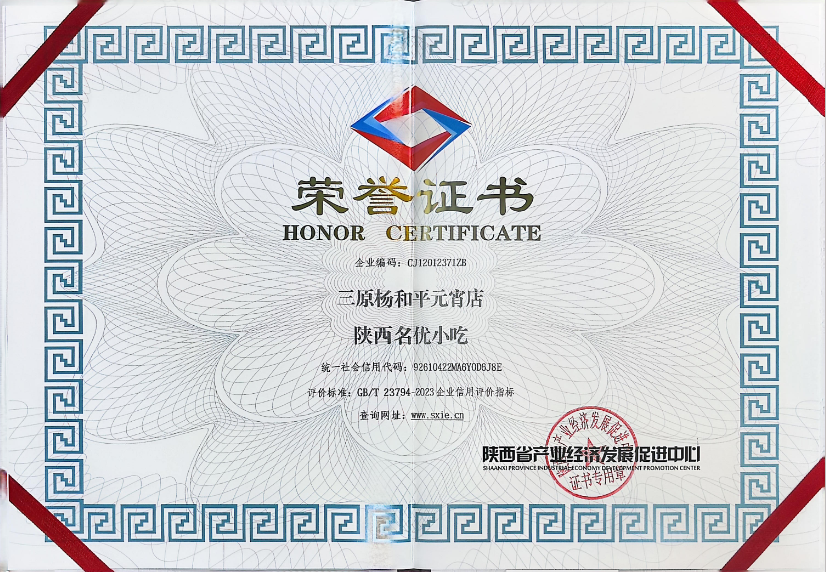
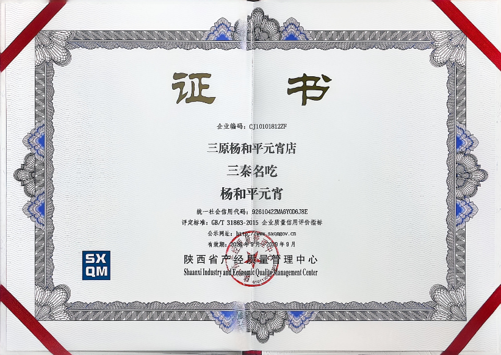
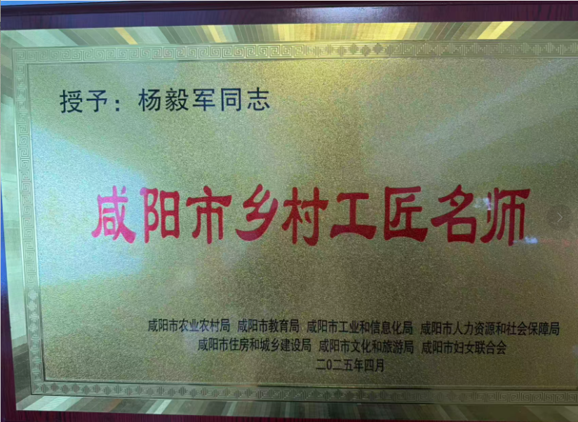
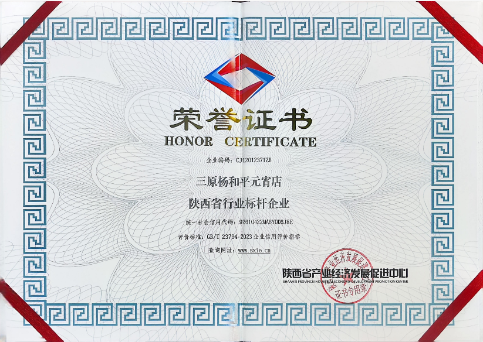
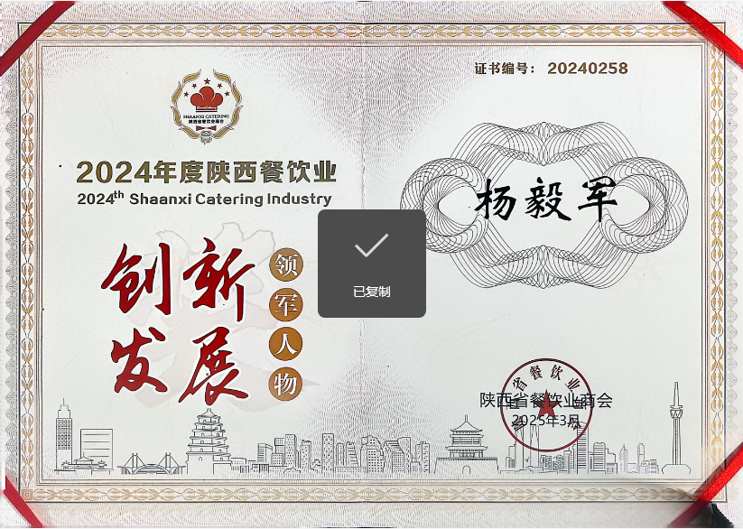
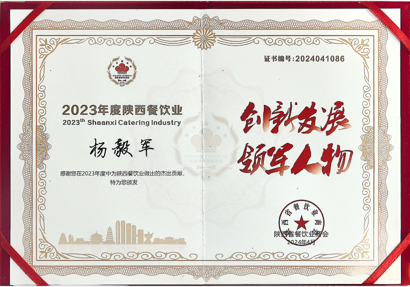
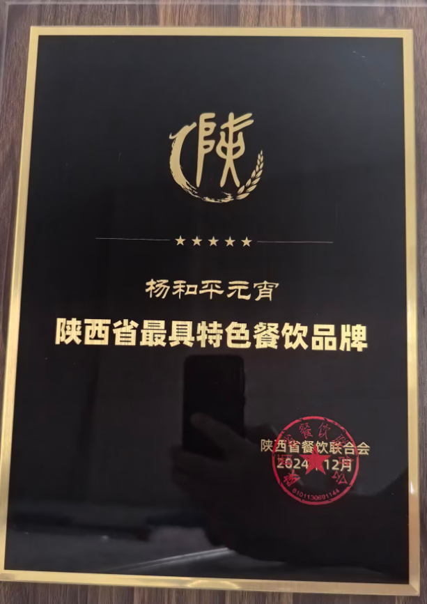
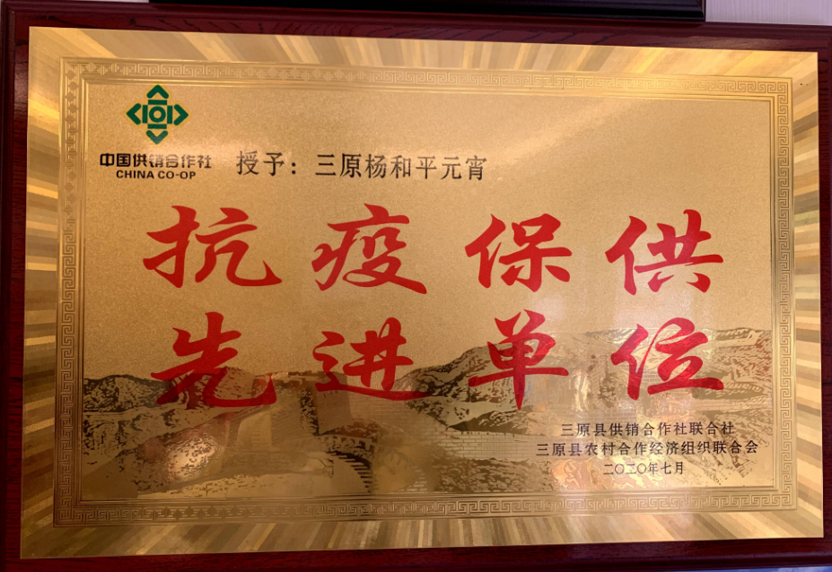